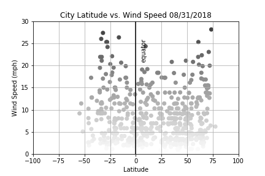

Summary: Latitude vs. Wind Speed
 We do not see a major change in wind speed with respect to latitude. There are very few cities away from equator for which we observe that the wind speed is higher but we cannot draw any conclusions in this as we observe many cities where the wind speed is very low even when those are away from equator. To summarize, we can conclude that wind speed is independent of city's latitude.